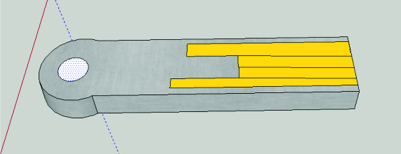
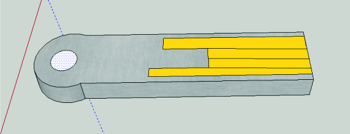

Innovaciones

Nancy Monserrat Macías Dorado.
U.A.Arquitectura de computadoras
5A T/V BTDS Integradora 2
Mtro.Marco David Camacho Rios
BUS_USB
 

“Mejoras”
Yo aquí lo que quise hacer, fue las mejoras en el USB(Universal Serial Bus) quería
que la usb fuera compacta pero resistente a todo tipo de riesgos por así decirlo y
que tuviera una gran capacidad, además de que fuera rápida.
Externamente
Material: Placas laminadas de alta presión HPL.(resistentes a golpes,
manipulación, humo, el viento, el sol y el agua, entre otros).
Remachado de acero inoxidable.
Compacto fenólico(gran resistencia a las altas temperaturas, fáciles de limpiar;
y son resistentes a productos químicos).
Pequeño,ligero y portátil (2cm de largo (aprox)).
Internamente
Chip memoria NAND (capaz de almacenar muchos más datos y tiene una
capacidad de grabar datos a una velocidad sensiblemente rápida.) Cuenta con una capacidad de 64GB.
Maneja mayores cantidades de energía con una potencia de 100W.
Transferencia de datos a una gran velocidad de 10Gbps.
Memoria RAM
Características
Memoria RAM con disipador de luces LEDS
Diseño extravagante y llamativo.
Uso en gabinetes.
Ofrece una velocidad de 2666MHz.
Cuenta con 184 contactos c/u funcionando como un módulo.
Velocidad mínima por pin de 1,6GB.
Explicación
Yo hice la memoria RAM pensando en los GAMERS ya que esta
memoria sería para gabinetes transparentes para que así sea
visibles el diseño que tiene y llame la atención; además que la
capacidad y velocidad de esta memoria es más grande que otras
versiones ya que está diseñada para soportar los juegos de estos
usuarios y sus documentos..
Memoria Cache
Nosotros elegimos hacer una mejora moviendo el control
de la memoria completamente al CPU por medio de un
bus dedicado a la caché, esto quiere decir que también
creamos una ranura en la caché en el cual irá conectado
el bus de memoria principal.
Una vez logrando que la memoria sea controlada completamente por el CPU
1.Aumentaremos el tiempo de acceso de 45 nanosegundos
2.Aumentaremos su almacenamiento
3.Incrementando las líneas de orden para la importancia de los archivos.
Chipset
Sirve de puente de comunicación con el resto de
componentes de la placa y diversos modelos de
placas en solo uno y puede ser actualizado y
configurado desde el ordenador de acuerdo
con la tarjeta madre que tengamos en nuestro
equipo, produciendo una compatibilidad entre
el mismo, los drivers y el sistema operativo con
los distintos componentes.
Diferente diseño
Mayor velocidad
Más puertos
Mejor soporte para las nuevas tecnologías
Procesador
Características
Fotones capaces de transmitir datos.
Mayor transferencia de datos.
Aleación de silicio.
La velocidad aumenta.
El factor de la temperatura y el calor se extingue.
Explicación
Yo le agregue al procesador lo que son un láser o placa de silicio que es
semiconductor que emite fotones que son capaces de transferir datos a mayor
velocidad, mayor capacidad de transferencia de datos,y el calor ya no afectaría al
procesador. Y con los fotones el procesador trabaja a la velocidad de la luz y así
realiza cada vez una mayor cantidad de instrucciones por segundo, ceros y unos
que viajan constantemente.
Tarjeta madre
Yo en mi reorganización acerque más lo que son los componentes principales como el CPU y alrededor puse la memoria RAM ,la cache, el chipset y el BIOS porque van de la mano y creí que entre más cerca más rápido trabajaría también puse el dispensador cerca de estos para que no se calienten y por parte de los demás los coloque igual.
Tarjeta madre
(equipo)
Principalmente la pila está en el centro ya que esta pieza al igual que la fuente de
poder o alimentación es primordial para que se mantenga en funcionamiento la
tarjeta madre y con ello sus componentes.
A un costado de la pila integramos un disipador el cual nos ayudara a bajar la
temperatura de los diferentes componentes y primordialmente de la pila para que
no se sobrecaliente y en la distancia en la que está integrado mantendrá la calidad
de la pila, este funcionara partiendo del centro y así con todo el cuerpo de nuestra
tarjeta.
El chipset estará en la parte superior, ya que será controlado totalmente por el
CPU y este mismo tendrá comunicación con el microprocesador y la memoria
RAM, controlando todas las tareas de acceso entre estos elementos y los puertos
PCI y AGP.
Es por eso que decidí integrar el microprocesador y el CPU de una manera
secuencial ya que estos estarán trabajando primordialmente con el chipset que
estará a un costado de ellos y debajo de este la memoria RAM que también será
utilizada y requerida en sus procesos.
Impresora
Impresora alargada,portátil manejada con aplicación desde el celular con bluetooth, por lo pequeña y alargada es fácilmente de traer y colocar en algún lado y muy funcional.
Scanner
Scanner alargado y portátil manejado por tu celular o computadora, muy funcional y lo puedes colocar en donde quieras ya que es chico.
Cámara web


Camara mini circular con pegamento en la parte de atrás para que la puedas pegar en tu compu con una calidad de 1080p HD.
Monitor
Pantalla plasma táctil con una forma diferente en la cual desde diferentes ángulos tú puedes ver la pantalla y con una pantalla grande para que disfrutes del contenido que estás viendo con una gran calidad HD de imagen.
Mouse
Mouse en forma de mano para poder descansar mientras trabajas y con botones en los dedos para todas las funciones utilizarlas rápidamente y fácil.
Teclado
Teclado con botones circulares para una mejor calidad y por estético y con una lámpara para iluminar todo integrado y todo a tu alrededor mas aparte las teclas con una luz para mejor visión.
Cable de
audio y video.
Un cable tipo HDMI con una entrada para celulares ya que a veces es difícil conectar algo o una foto que tienes en tu cel hacía la tele o a tu computadora entonces es así más fácil el poder visualizar tus cosas